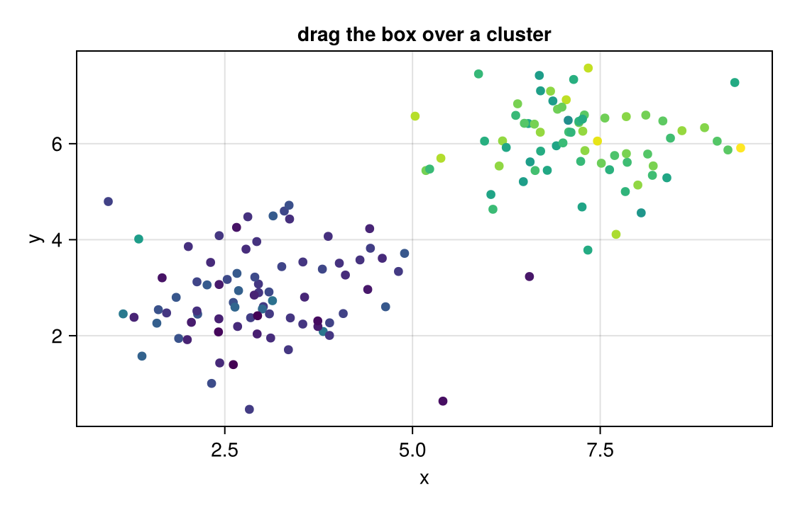

Compare a cluster
A brush is the natural way to ask "what is different about these points?". Drag the box over a cluster and release; the histogram under the scatter compares that cluster's z with every sample. Hover any point to read its measurements.
Notebook as text
Drag the box over a cluster and release. The histogram below compares that cluster's z with every sample.
Scatter two measurements, colour the points by a third, z, and keep all three on each point's payload so a hover reads them. ROIInteractable brushes the points.
begin
# Deterministic noise, so the example looks the same every time it runs.
u(k) = mod(sin(k * 12.9898) * 43758.5453, 1.0)
g(k) = sqrt(-2log(u(k) + 1.0e-9)) * cos(2π * u(k + 0.5))
n = 150
xs = [i <= 80 ? 3.0 + 0.9g(i) : 7.0 + 0.9g(i) for i in 1:n]
ys = [i <= 80 ? 3.0 + 0.9g(i + 1000) : 6.0 + 0.8g(i + 1000) for i in 1:n]
zs = [i <= 80 ? 1.2 + 0.3g(i + 2000) : 2.8 + 0.35g(i + 2000) for i in 1:n]
fig = Figure(size = (560, 360))
ax = Axis(fig[1, 1]; xlabel = "x", ylabel = "y", title = "drag the box over a cluster")
s = scatter!(ax, xs, ys; color = zs, colormap = :viridis, markersize = 9)
samples = [(; sample = i, x = round(xs[i]; digits = 2), y = round(ys[i]; digits = 2), z = round(zs[i]; digits = 2)) for i in 1:n]
pts = PointInteractable(ax, s; id = :pts, payloads = samples)
roi = ROIInteractable(ax; bounds = (5.2, 9.2, 4.4, 7.8), selects = :pts)
nothing
end@bind picks stores the points inside the box when you release.
@bind picks masque(fig, [pts, roi])
This cell reads picks, so it redraws the comparison each time you release the box. zs[picks] is the z of the points inside.
begin
edges = range(minimum(zs), maximum(zs); length = 21)
inside = picks === nothing ? Float64[] : zs[picks]
cmp = Figure(size = (560, 260))
cax = Axis(
cmp[1, 1]; xlabel = "z", ylabel = "samples",
title = isempty(inside) ? "all samples" : "$(length(inside)) samples in the box, against all $(length(zs))"
)
hist!(cax, zs; bins = edges, color = (:gray, 0.45), label = "all")
isempty(inside) || hist!(cax, inside; bins = edges, color = (:darkorange, 0.85), label = "in the box")
axislegend(cax; position = :rt)
cmp
endOn this page the two clusters are recorded as snapshots; in your own notebook, every release recomputes the histogram.
How it works
Each point's payload carries its three measurements, so the tooltip shows them without any extra code. The ROIInteractable names the points' layer with selects = :pts, so releasing the box makes picks a vector with one event per point inside. That vector indexes your data directly — zs[picks] is the z of the points in the box — and the last cell draws an ordinary Makie figure from it.
Variations
- Keep your samples in a
DataFrameand pass it aspayloads; thendf[picks, :]is the rows inside the box, ready for any summary. Guard it for the state before the first release, whenpicksisnothing:picks === nothing || isempty(picks) ? df[1:0, :] : df[picks, :]. - Replace the histogram with whatever the comparison needs: a table of means, a second scatter of two other columns, or a model fitted to the selected points only.
Brush a region covers the box itself; Linked views covers driving other plots from a selection.